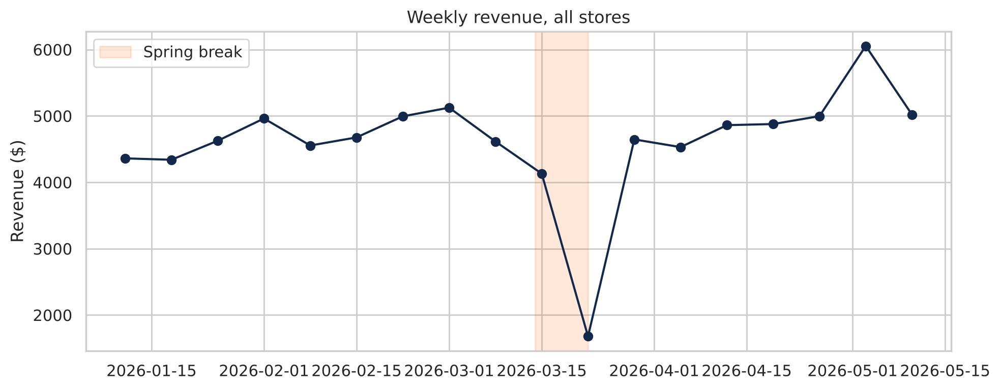
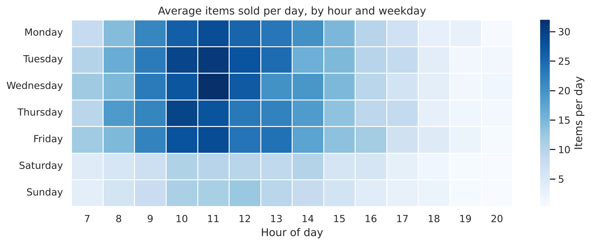

Campus Coffee Sales Analysis
I analyzed one semester of point-of-sale data from three campus coffee shops to find when and where revenue comes from, then suggested staffing and menu changes.
The question
Where does the revenue come from, and when are the stores busiest? The answers should help plan staff hours and menu changes.
The data
The data is one semester of transactions from Green Street, Library Kiosk and Research Park, from January 5 to May 8, 2026. Each row is one line on a sale: date, hour, store, item, category, unit price and quantity. I checked 13,829 rows for missing values and exact duplicates; neither was present. Revenue is unit price times quantity, and the term total is $83,046.
The data has no costs, wages or margins, so these findings are about revenue, not profit.
What I did
- Used pandas to check missing values and exact duplicates, and calculated revenue as unit price × quantity.
- Added up revenue by store, category, item and day.
- Grouped sales by weekday and hour. The heatmap divides each total by the number of that weekday in the term, so it shows a typical day.
- Used Matplotlib and seaborn to chart weekly revenue, category mix and hourly demand; used Plotly to explore daily sales and menu items.
Charts
Select any image to view it at full size.



Interactive charts
Hover or tap for details. Select a store or category in the legend to hide or show it.
Findings
- Green Street brings in the most revenue: $35,434, or 42.7% of the total. It leads in every category, making it a priority for a staffing review. Revenue alone does not measure workload.
- The week ending March 22 brought in $1,678: 64% below the median observed week ($4,661). The notebook marks March 14–22 as spring break; reduced hours during that period are worth testing. The final weekly bin covers only five days.
- Late morning is the busiest time. On weekdays, sales peak between 10 and 12. Weekdays bring in 87% of revenue.
- Library Kiosk peaks in the afternoon. About 64% of its revenue comes at 2 p.m. or later, suggesting a later staffing peak to test against hourly workload.
- Lattes bring in the most revenue: $19,121, ahead of breakfast sandwiches ($13,444) and drip coffee ($13,288). A coffee and breakfast sandwich bundle could raise the average order.
These are descriptive findings from one semester, not measured business outcomes. I would test staffing and bundle changes against wage, cost and receipt data before recommending a rollout.